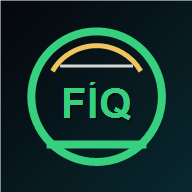

Modalita offline
FootballÍQ
La base dell'app e' salvata. Riapri quando torna la connessione per aggiornare foto e dati esterni.

Modalita offline
La base dell'app e' salvata. Riapri quando torna la connessione per aggiornare foto e dati esterni.